Content & Social Media Marketing
Video and writing. Most of it for NSYS Group, a B2B software and robotics company serving the used and refurbished mobile device industry in 75+ countries, where I ran content and social from September to November 2026. I shoot and edit the video myself; the articles below ran under my byline on the company blog.
Scripted, shot and edited by me. Instagram won't preview inside this page, so each link opens the reel.
341k views · 30.2k likes · 3,542 reposts
The account's breakout reel — a like on roughly one view in eleven, and over 10,000 people who either reposted it or sent it to someone. The format it established became the template for everything after.
64.7k views · show announcement
Promo reel for a gig that sold out. Comments and likes stayed modest while sends ran high — people were forwarding it to the friends they wanted to go with, which is exactly what an event post is for.
27k views · 353 likes
21.5k views · 325 likes
Live footage from a gig. The strongest comment response of the set at 40.
17.7k views · 85 likes
A trade audience rather than a consumer one — wholesalers and refurbishers, not a public scrolling for entertainment. Reach here is a fraction of a music account's by design; the job is to be understood by the few thousand people who buy this software.
Social graphics for a B2B audience: concept, copy and layout. The brand's black-and-yellow system was already set; my part was deciding what each post had to say and building it out.
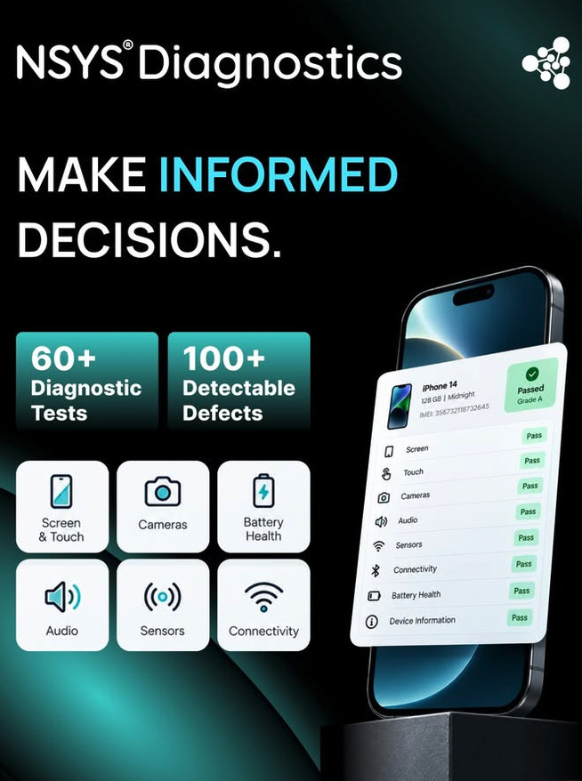
Product post — the diagnostics suite reduced to two numbers and eight icons.
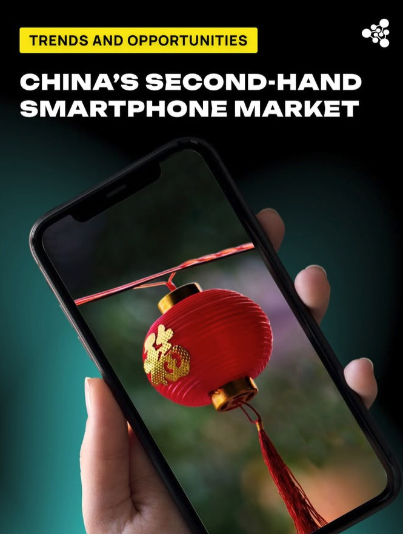
Market analysis — China's second-hand trade, opening a trends series.
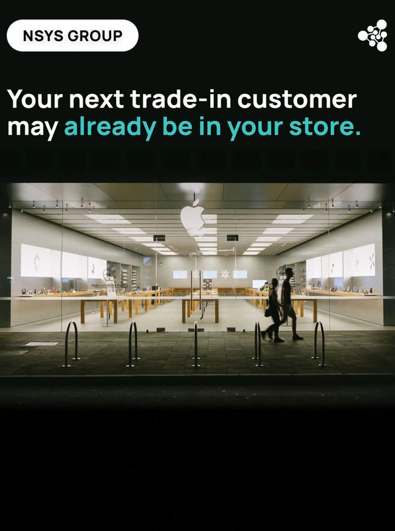
Single-line hook for retailers: the trade-in customer already in the shop.
LinkedIn event banner — Circular Summit 2026, London. Ran alongside the announcement article I wrote.
Built from my own long-form article on the blog: the same research cut down to eight slides, one trap per slide, ending on a contact prompt. One piece of work, two formats, two audiences — people who read and people who swipe.
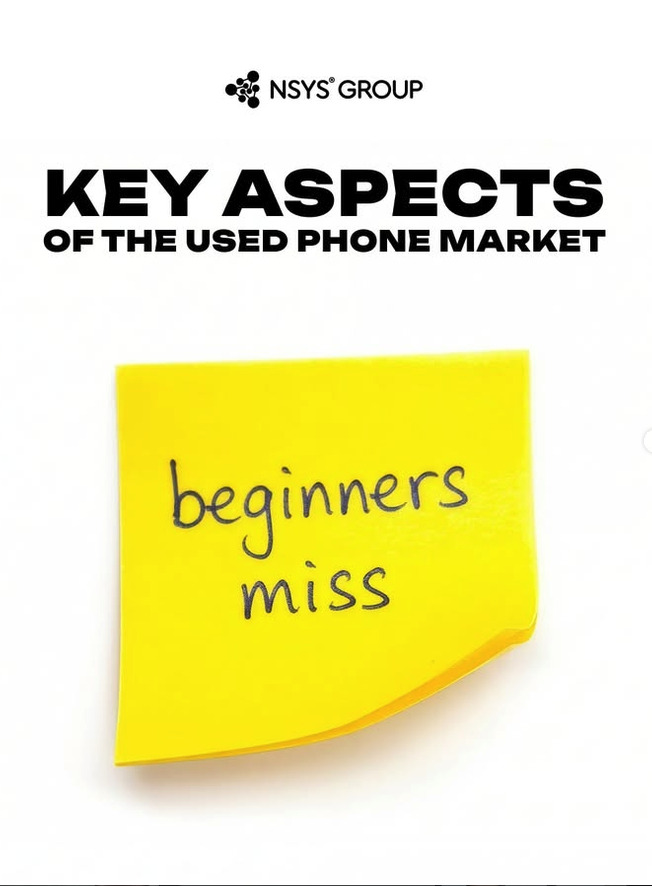
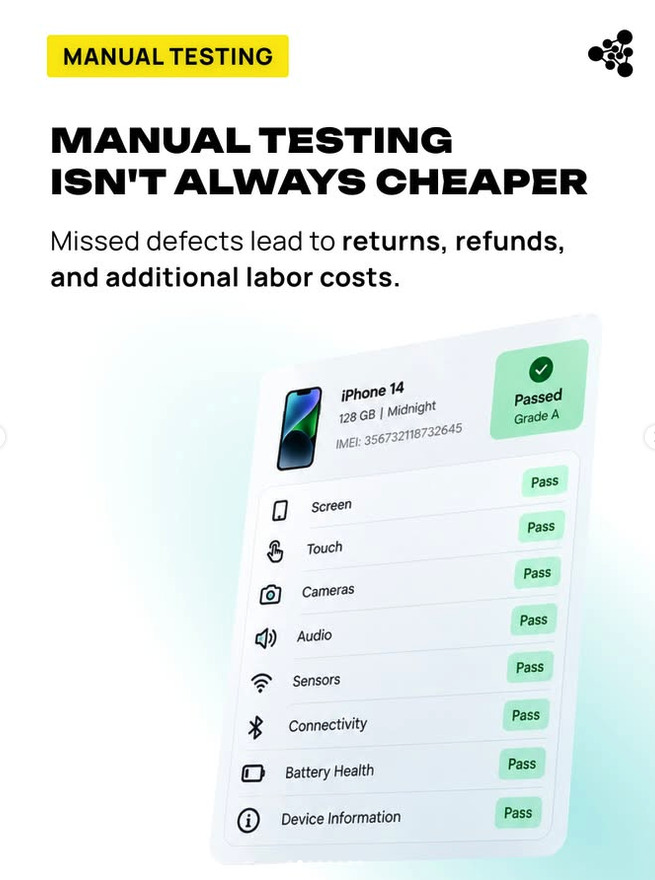
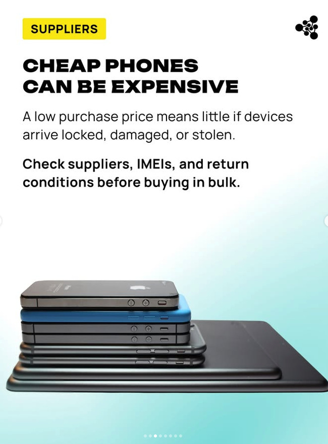
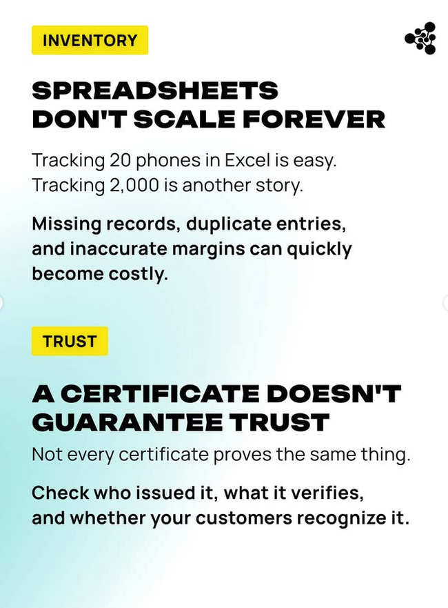
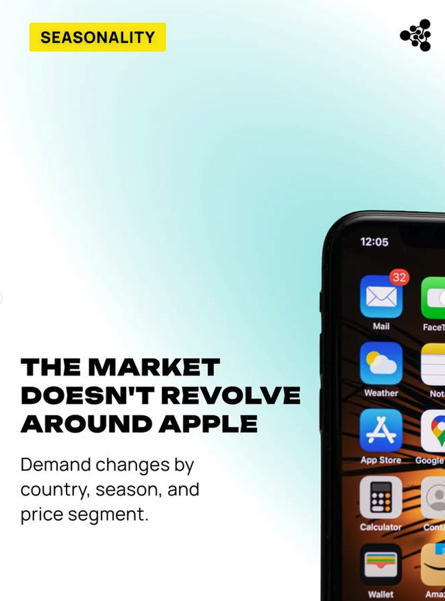
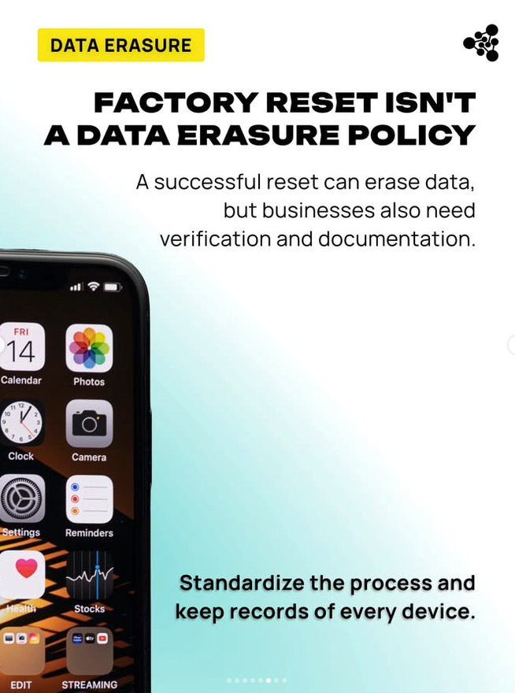
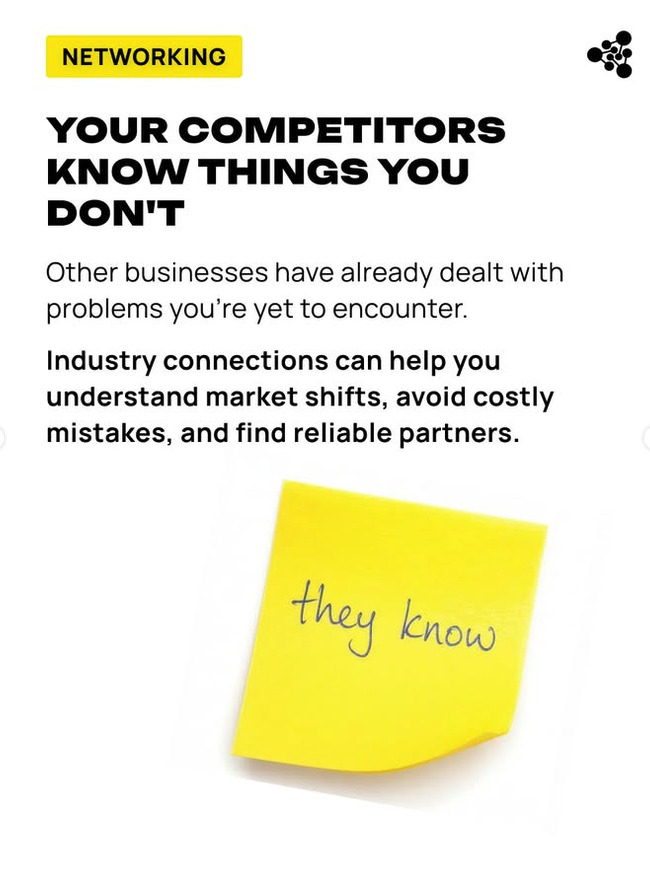
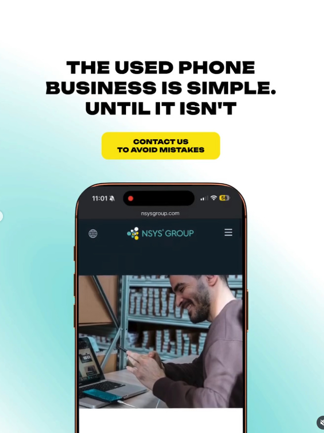
Google Search Console, five tracked articles, October–November 2026. Most pieces on this blog draw 10–20 clicks; these rank on the first page, between positions 6.4 and 8.
Long-form pieces for warehouse and refurbishment operators. Each starts from a problem the reader already has and ends at the part of the product that solves it.
Why Human Error Creates Inventory Problems in Used Phone Warehouses
Mistyped IMEIs, inconsistent grading and misregistered returns, and what they cost in wrong shipments. Builds the case for barcode tracking and ties it to NSYS Inventory.
7 Obvious Things About the Used Phone Business That Beginners Often Overlook
Seven operational traps in the used phone trade, from supplier vetting to data erasure and seasonal demand. The longest piece here at roughly a nine-minute read.
How to Detect Sensor Failures in Used Phones
Technical explainer on catching faulty sensors before a device is graded and resold.
Release notes and event announcements — the register shifts to short, factual and precise.
NSYS Diagnostics Update: Expanded MacBook Testing and Improved Reporting
Release notes covering MacBook hardware detection, automated testing, certificate changes and web platform fixes. Written from engineering input for a mixed technical and commercial audience.
NSYS Group to Attend Circular Summit 2026 in London
Event announcement for the circular economy trade calendar.
Short guides written against what people actually search when a device fails. Plain language, fault first, fix second — the top of the funnel for a technical product.